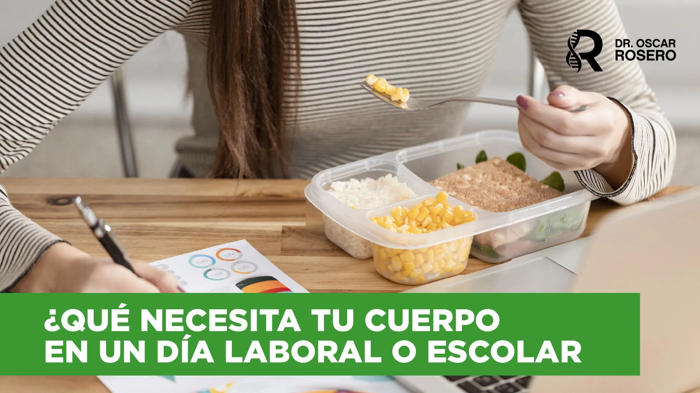
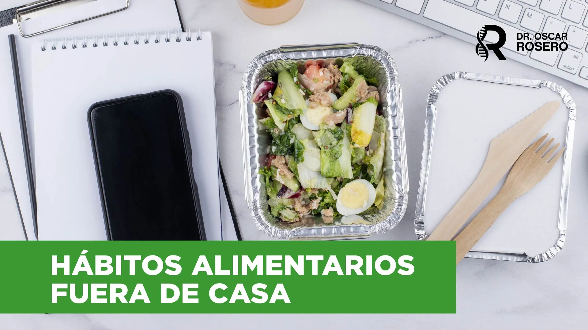
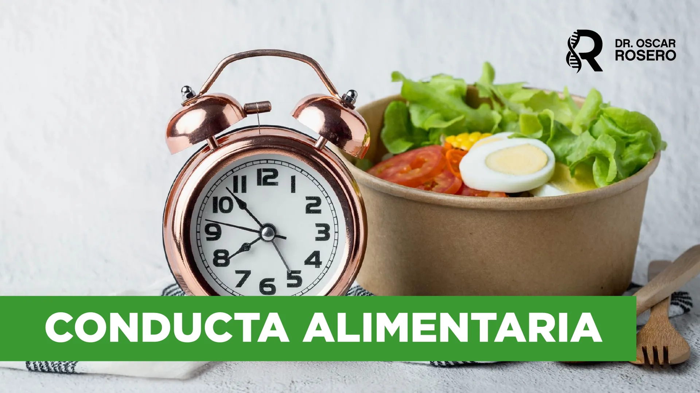
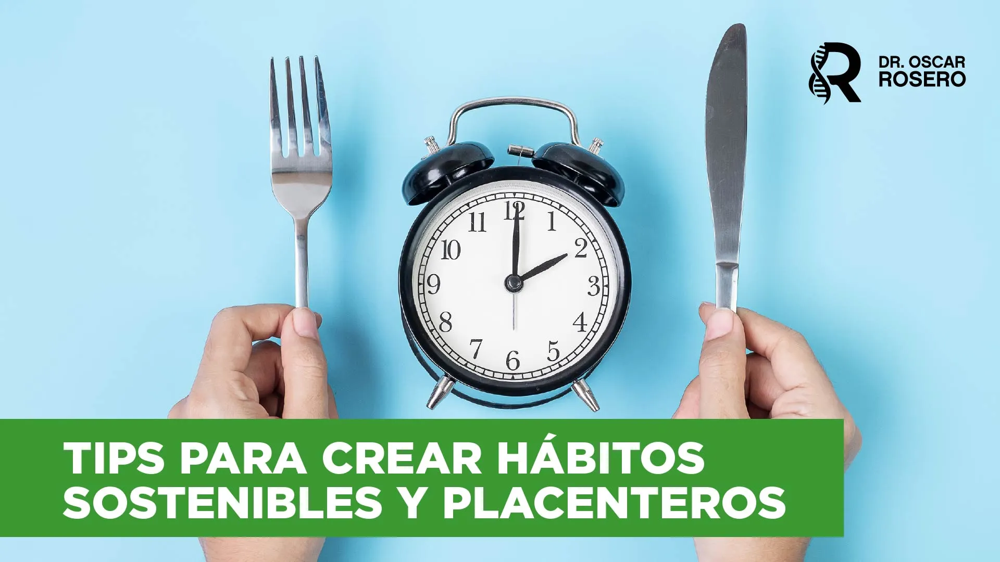
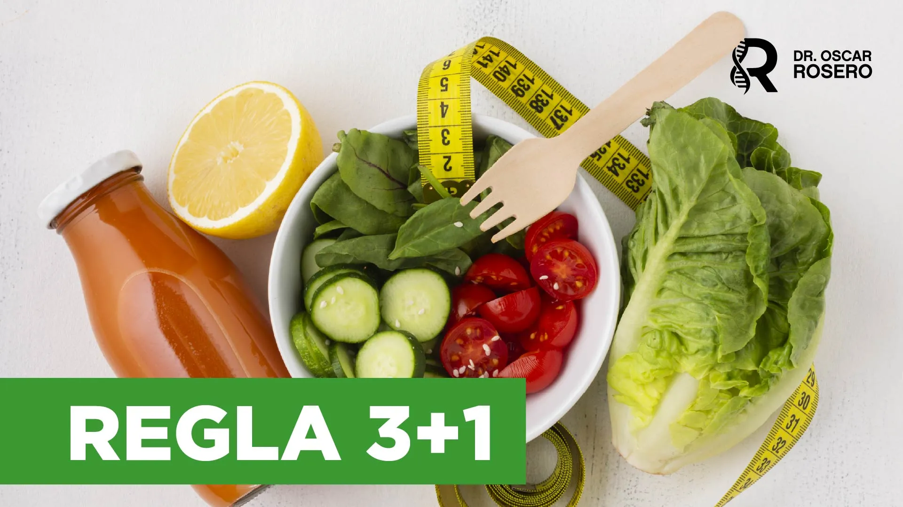
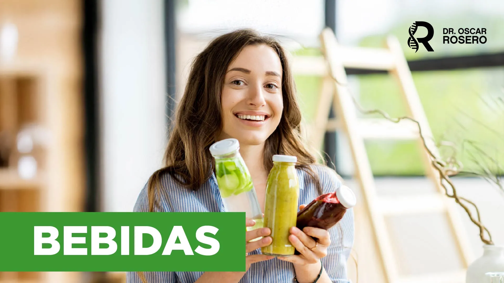
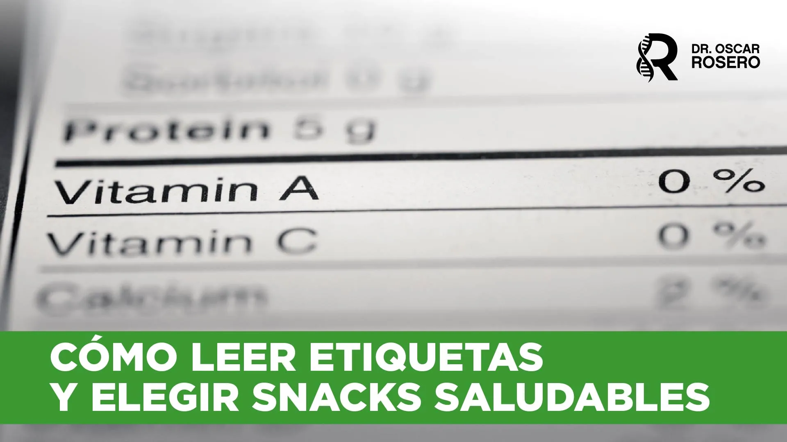
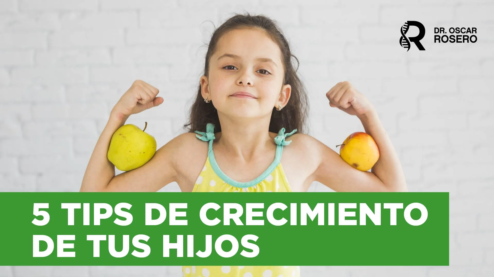
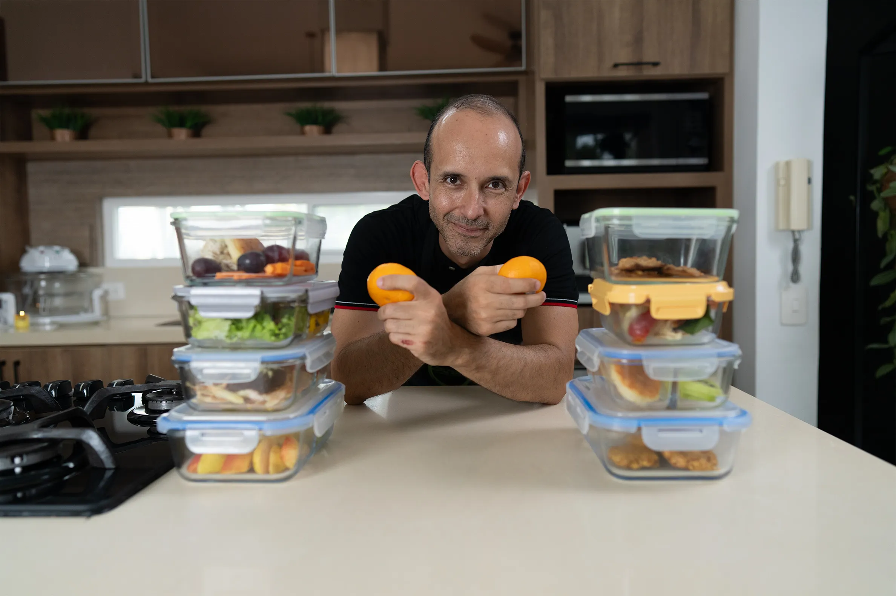

Bienvenida
El Dr. Rosero te recibe: "la comida real nos va a sanar."
La Regla 3+1: 1 proteína, 1 carbohidrato, 1 vegetal o fruta + 1 hidratación. Es la fórmula que enseña el Dr. Rosero para que las loncheras sean 100% comida real — para tus hijos y para ti en la oficina.
Pero una decisión de $30 USD puede cambiar miles de mañanas.
Quiero loncheras saludables y fácilesTransforma tu alimentación y la de tu familia con estrategias prácticas respaldadas por la ciencia médica del Dr. Oscar Rosero.
El Dr. Rosero te recibe: "la comida real nos va a sanar."

Macros y micros: "necesitamos los tres macronutrientes — ninguno es excluyente."

Carbohidratos para esas explosiones de actividad. Proteína para mantenimiento. Grasas para hormonas.

"Los ultraprocesados son los enemigos." Azúcar, harina refinada y grasas vegetales industriales.

"Comer bien es hacerlo al 100% siempre." Por qué un solo día trampa puede inflamarte hasta 48 horas.

"Si los refrigerios salen de tu casa, van a ser 100 veces mejores que lo que vas a comprar."

Panadería, comida callejera y cafetería: por qué caemos y cómo planear los refrigerios para no volver a improvisar.

"Tus comidas principales deben estar repletas de proteína." Para no llegar al snack con hambre real.

"No lo compres porque te lo comes." Voluntad, hidratación y rutinas para que los antojos vayan disminuyendo.

Del colegio a la oficina: la fórmula sirve para tus hijos y también para ti.

1 proteína + 1 carbo + 1 vegetal o fruta + 1 hidratación. "La regla del 3+1 nunca falla."

Por qué un capuchino con croissant te dispara la insulina, la leptina y eleva el cortisol.

"El cerebro solo trabaja con glucosa." Combinaciones para no caer en hipoglucemia y rendir en clase u oficina.

Cierre del curso. "Tu cuerpo es lo más sagrado. Y si estás aquí, es por algo."
Dos loncheras, un solo día de colegio. Mira cuál nutre y cuál solo llena.
Efecto metabólico: pico de insulina, hipoglucemia 1 hora después, antojo de azúcar a media tarde, inflamación sistémica.
Efecto metabólico: saciedad real hasta el almuerzo, energía estable, cero antojos, metabolismo sano.
"Una arepa con queso y un huevo cocido aportan más nutrición a menor costo que una barra de proteína procesada."
— Dr. Oscar Rosero, Documento del curso
Comparación cualitativa basada en patrones de compra. Para ver tu ahorro real con tus números, usa la calculadora más abajo.
3 piezas + 1 hidratación. Cero restricciones extremas, cero contar calorías, cero comprar productos "fitness" caros. "Es la fórmula que nunca falla."
"No se olviden de la proteína en todas las loncheras. Esto es fundamental, es necesario."
"Los niños necesitan sí o sí aporte de carbohidratos para esas explosiones de actividad física en el colegio."
"¿Cuánta fruta? Una porción. Una unidad o una taza." Vitaminas, minerales y fibra para que la digestión funcione.
"Las bebidas van a ser sin azúcar y no jugos." Agua, agua con limón o té sin azúcar — la mejor amiga del bienestar.
Todas grabadas paso a paso. Hechas en AirFryer u horno, con ingredientes que ya tienes en casa.




El Dr. Rosero lo dice claro: "Los carbohidratos son energía disponible de manera rápida. Las proteínas son esenciales constituyentes de nuestra estructura corporal. Las grasas forman parte de la construcción de hormonas."
Aprende a combinarlos para que tus hijos rindan en clase y tú no caigas en el bajón de las 3 de la tarde.
Marca la opción que más se parece a tu día normal. Los números salen automáticamente.
Responde con la lonchera que preparaste hoy (o pensabas preparar). Diagnóstico inmediato del Dr. Rosero — sin email, sin trampas.
Además del curso completo, recibirás herramientas adicionales que complementarán perfectamente tu aprendizaje y te darán ventajas extras.

Una masterclass completa donde aprenderás a identificar los ingredientes que realmente importan, evitar las trampas del marketing alimentario y elegir las mejores opciones para tu familia.

Vas a saber qué necesita tu hijo según su edad y cómo dárselo sin complicarte.
Comentarios reales en Instagram. Sin filtros, sin actores.
"Esta información es una bendición, sabemos que no es fácil cambiar el chip pero podemos ir paso a paso y educarnos por nuestros niños que son las nuevas generaciones."
"Súper, saludable, real y aparte mucho más económico que un paquete de papas y una pony malta — son las onces más comunes que he visto en los colegios."
"Una buena alimentación es una muestra de amor muy grande hacia los hijos."
"Qué bueno esos consejos y ejemplos de meriendas para nuestros niños."
"Mil gracias por sus sabios consejos. Dios lo bendiga por informarnos y orientarnos para tener salud y cambiar nuestros hábitos."
"Me encanta cómo nos hace valorar la comida real."


"Mi nombre es Oscar Rosero, médico endocrinólogo experto en estilos de vida y un convencido de que la comida real nos va a sanar."
Especialista en nutrición metabólica y hormonas. En consulta atiende a familias con hijos en colegio, profesionales en oficina y pacientes con resistencia a la insulina, hipotiroidismo y sobrepeso. Su filosofía: estrategias prácticas, sin juicios ni obsesiones, aplicables a la vida real.
o 12 cuotas con tarjeta de crédito
 Garantía Hotmart de 7 días
Garantía Hotmart de 7 díasEl Dr. Rosero lo dice claro: "Si mis refrigerios salen de mi casa, van a ser 100 veces mejores que lo que va a comprar." Las recetas del curso duran entre 5 y 15 minutos, usan ingredientes que ya tienes en la nevera y muchas se preparan con AirFryer u horno (chorizos, nuggets, croquetas, hamburguesas).
Además, en la clase de hábitos sostenibles te enseña a planear los refrigerios de la semana en un solo momento — no a las 6 AM corriendo.
Recetas sí. Lo que no encuentras gratis es el sistema: la Regla 3+1, el orden correcto de los alimentos para no disparar tu insulina, las combinaciones por edad, qué hacer si tu hijo tiene sobrepeso, hipotiroidismo o resistencia a la insulina.
Aquí no compras "más recetas" — compras un protocolo médico validado en consulta por un endocrinólogo. Eso es lo que te ahorra los próximos 5 años de improvisación.
El Dr. Rosero responde a esta objeción literal en sus clases: "al convertir esas verduras en muffins salados o croquetas, los niños las consumen sin problema."
El curso incluye recetas pensadas para niños selectivos: muffins de espinaca y queso, croquetas de atún, mini albóndigas con uva pasa adentro, nuggets de pollo caseros. Las verduras dejan de ser "el problema" y empiezan a ser parte del sabor.
Es el mito más arraigado. El Dr. Rosero responde con números: "Una arepa con queso y un huevo cocido aportan más nutrición a menor costo que una barra de proteína procesada."
Y una alumna real (@angela_vivianag) lo dice así: "Súper saludable, real y aparte mucho más económico que un paquete de papas y una pony malta — son las onces más comunes en los colegios."
Además, el Bono #1 te enseña a leer etiquetas y comprar buenos procesados sin caer en el marketing engañoso "fitness".
Sí. El Dr. Rosero lo abre con esto en la clase de la Regla 3+1: "Vamos a aprender la regla del 3+1 para sus hijos, pero también para ustedes en la oficina."
El método aplica igual para adultos en oficina, estudiantes universitarios y cualquier persona que necesite comer fuera de casa con energía estable, sin caer en café+croissant a media mañana.
Inmediatamente. El pago se procesa por Hotmart (con tarjeta de crédito hasta 12 cuotas, PSE, Nequi o débito). Recibes acceso de por vida a la plataforma desde cualquier dispositivo. Si por cualquier razón el curso no te sirve, tienes 7 días de garantía Hotmart con devolución del 100% sin preguntas.